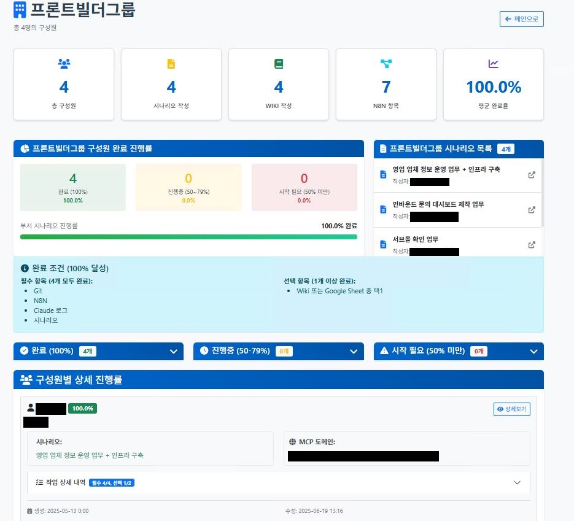

AI 혁신 교육 프로그램
운영부서 병목 해결 및 AI 혁신 주도를 위한 실무 중심 교육 프로그램
▲ 28개 사내 Agent 구축 완료
▲ N8N WF 도합 +500 제작
▲ 팀 별 AI 혁신 담당인력 2명 육성
▲ 우수사례 웨비나 운영
① 교육 목적 & 철학 / Education Purpose & Philosophy
핵심 교육 철학
단순한 신기술 교육이 아닌, 실제 운영부서의 병목과 기술적 이슈를 해결하는 AI 혁신 주도
교육 접근법
- 운영부서 병목 구간 우선 파악
- 기술적 이슈로 제작 불가한 영역 식별
- 관련 기술 및 매뉴얼 공유
- 실제 운영프로세스 도입 지원
기대 효과
- 실무 중심의 AI 활용 역량 강화
- 부서별 맞춤형 솔루션 개발
- 전사 AI 혁신 문화 확산
- 업무 효율성 및 생산성 향상
② 교육 대상 & 운영 방식 / Target & Operation Method
교육 대상
- 웨비나: 우수사례 발표 및 전사 공유
- 팀별 교육: 각 운영부서 실무진
- 심화 과정: AI/RPA 전담 인력
운영 방식
- 2주 스프린트: 팀별 집중 교육 기간
- 2일 스크럼: 진행상황 점검 및 피드백
- 실습 중심: 이론보다 실무 적용 우선
③ 본인의 역할 / My Role
🎯 PM
AI, RPA 교육 주도
- 교육 커리큘럼 설계
- 진행 일정 관리
- 성과 측정 및 개선
- 팀별 맞춤형 교육 계획
👨🏫 기술코칭
기술 코칭 지원
- 실습 가이드 제공
- 기술적 문제 해결
- Best Practice 공유
- 개별 멘토링
🛠️ 제작지원
제작 필요 구간 지원
- 프로토타입 개발
- 기술 검증
- 구현 가이드
- 배포 및 운영 지원
교육 운영 체계
교육 개요

각 담당자 배정

교육 로드맵

④ 교육 관리 프로세스 / Education Management Process
별도 관리 Front 구축
체계적인 교육 관리 및 성과 추적을 위한 전용 관리 시스템 개발
구축 배경 및 사유
- 형상관리 이슈: 각 담당자들이 제작하면서 형상관리하는 시간 부족
- 현황 파악 어려움: 인사팀이 전체 인원들의 작업결과를 쉽게 파악할 수 없음
- 평가 체계 필요: 참여자들의 정확한 평가를 위한 구조화된 데이터 필요
- 성과 공유: 웨비나 진행 및 인사팀 정보 전달로 프로젝트 참여도 향상
관리 시스템 구조
- 전체 현황 대시보드: 교육 진행률 및 참여자 현황 실시간 모니터링
- 개별 제작 사양: Streamlit 기반 실시간 업로드 Middle ware 제공
- 성과 자동 수집: Git, Wiki, GSheet의 경우 직접 개별 수집 WF 제작하여 매일 00시 자정 스케줄러를 통해 제작자의 형상관리 리소스 절감 지원
- 인사 평가: 인사팀 협의 하여 객관적 평가 기준 및 자동 점수 산출
관리 시스템 화면

1. A2A TF 전체현황

2. A2A TF 그룹 전체

3. A2A 그룹 상세

4. A2A TF 개인 상세
⑤ 주요 교육 내용 / Main Curriculum
🔄 n8n (Workflow Automation)
N8N 문법 & 기본 설정
- 워크플로우 설계: 노드 기반 비주얼 프로그래밍
- 데이터 흐름:
- 외부 Json import 시 version 체크
- Proxy를 통해 라우팅되는 N8N 구조로, 내부 Webhook 호출 양식 공유
- 조건부 실행 로직:
- IF 노드 활용
- Filter 노드 활용
- Switch 노드 활용
- 에러 핸들링:
- Error Trigger node 활용
- Node 별 Option 지정하여 에러 분기처리
- Stop: 에러 발생 시 워크플로우 중단
- Continue: 에러 무시하고 다음 노드 실행
- Continue using error: 에러 데이터를 다음 노드로 전달
- 문서화 & 관리:
- Note 기능: 노드별 설명 및 문서화
- 실행횟수 처리: 반복 실행 및 배치 처리 설정
Credential 설정
- Google Console:
- API 및 서비스 관리자에서 필요한 라이브러리 활성화
- 사용자 인증정보 → OAuth 2.0 웹앱 생성
- 리디렉션 URL 설정 및 인증 플로우 구성
- Google 서비스 연동 처리 (Sheets, Drive, Gmail 등)
- Slack:
- Socket 모드 활성화
- User Scope 설정 (쓰기, 읽기, 참여 등)
- Slack Trigger를 위한 WebHook 설정방법 안내
- DBMS:
- PostgreSQL, MySQL 연결 설정
- host 별 N8N 접근 방화벽 이슈 해결
- Jira & Wiki: API 토큰 생성 및 인증 설정
- 3rd Party 연동:
- Clova AI: Http node로 STT, OCR 활용 템플릿 제작 제공 (Token 중앙관리 이슈 대응)
- 채널톡: 외부 IP 이슈로 IS과 협의하여 방화벽 해제 후 Webhook trigger 교육진행
- GPT: LLM 이슈로 외부→n8n 지정 port→내부 웹훅 호출을 통한 중앙관리 프로세스 구축 후 교육진행
Built-in App 활용
- 데이터 처리 노드: JSON 변환, 필터링, 집계
- Slack 연동:
- 수신자 입력 문법 교육 (@, #)
- Block kit builder 활용
- 슬랙 버전 업데이트로 인한 File attach 기능 N8N 연동 해제되어 별도 http node로 해결
- Google Sheets:
- 데이터 읽기/쓰기, 자동 업데이트
- idx 매칭 방법 안내
- 단일 컬럼만 PK 지정가능한 솔루션 제공
- CRUD 기능 별 option 설정방법 안내
- Jira:
- 사내 Custom fields 혼재되어 Get option을 통해 원하는 Fields 제어 방법 교육
- JQL (Jira Query Language) 기본 사용방법 안내
- Salesforce:
- 2가지 Org 개별 운용:
- 1차 Sandbox Credential 할당 활용교육 진행
- 2차 실서버 Credential ↔ N8N 본 제작 진행
- Org 별 서로 다른 Object로 운영되어 Get 옵션을 통하여 커스텀 object 제작에 대한 해결방안 전달
- 2가지 Org 개별 운용:
App별 Option 설정
- Slack App Options:
- Channel 선택 및 사용자 멘션 설정
- 메시지 포맷팅 (Markdown, Block Kit)
- 첨부파일 및 이미지 업로드 옵션
- Google Sheets Options:
- 시트 범위 지정 및 셀 주소 설정
- 데이터 타입 변환 옵션
- 헤더 행 처리 및 필터링 조건
- Jira Options:
- 프로젝트 키 및 이슈 타입 설정
- 필드 매핑 및 커스텀 필드 처리
- 워크플로우 상태 전환 규칙
- Database Options:
- 쿼리 파라미터 바인딩
- 트랜잭션 처리 및 롤백 설정
- 연결 풀 및 타임아웃 관리
제작결과

SalesForce 워크플로우

Single Agent Template

Meta 광고생성 워크플로우

Google Slide 제안서 자동생성

고객사 리포트 발송 워크플로우
n8n
Google API
Slack Socket
PostgreSQL
Clova OCR
GPT API
⚡ Odin (Infrastructure & DevOps)
사내 인프라 기반 개발
- 제작 프로세스:
- 사내 인프라 기준 개발 가이드라인
- 프로젝트 템플릿 및 구조 표준화
- 코드 리뷰 및 승인 프로세스
- Odin App 운영:
- 기본 앱 구조 및 아키텍처 이해
- 배포 방식 및 환경 설정
- 앱 라이프사이클 관리
- OdinServerless:
- 서버리스 함수 개발 방법론
- 이벤트 기반 아키텍처 설계
- 함수 모니터링 및 디버깅
- 개발환경:
- 로컬 개발 환경 구축 및 설정 (Dependency, Docker 등)
- 비개발자를 위한 Cursor 기반 개발 프로세스 공유
- Gitlab 사용가이드
CI/CD 설정
- 파이프라인 구성:
- 빌드, 테스트, 배포 자동화 설정
- 단계별 게이트웨이 및 승인 프로세스 (사내 IS 협의 승인 프로세스 구축)
- 환경별 배포 전략 (dev, staging, prod)
- GitLab 관리:
- 레포지토리 설정 및 권한 관리 (팀내 공유 프로세스 가이드)
- 브랜치 전략 (표준TEMP > Duplicate Custom 환경 제공)
- Docker 운영:
- FastAPI 기반 서비스 컨테이너 실행
- WAS(Web Application Server) 환경 컨테이너 운영
- Selenium 기반 Crawling 컨테이너 운영
- Dependency 관리:
- 패키지 의존성 관리 및 버전 제어
- 보안 취약점 스캔 및 대응
- 라이선스 관리 및 컴플라이언스
클러스터 관리
- ACLs 생성:
- 클러스터 접근 권한 설정 및 관리
- 사용자 그룹별 권한 분리
- 네임스페이스 기반 리소스 격리
- 리소스 모니터링:
- CPU, 메모리, 네트워크 사용량 추적
- 알림 및 임계값 설정
Odin
OdinServerless
GitLab CI/CD
Docker
🤖 MCP (Model Context Protocol)
MCP 기본 개념
- 프로토콜 이해:
- MCP 표준 및 통신 규격 이해
- 프로토콜 버전별 차이점 및 호환성
- 메시지 포맷 및 데이터 구조
- Context 관리:
- 컨텍스트 유지 및 전달 메커니즘
- 세션 관리 및 상태 저장
- 컨텍스트 크기 최적화 전략
- 모델 간 통신:
- AI 모델 간 데이터 교환 방식
- 멀티모달 데이터 처리
- 통신 최적화 및 지연 시간 관리
- 보안 체계:
- 인증 및 권한 부여 시스템
- 데이터 암호화 및 전송 보안
- 접근 제어 및 감사 로그
MCP 인스턴스 운영
- 인스턴스 생성:
- 개별 MCP 서버 구축 방법
- 환경별 설정 및 구성 관리
- 초기 설정 및 테스트 절차
- 운영 프로세스:
- 배포 자동화 및 버전 관리
- 실시간 모니터링 및 헬스체크
- 정기 유지보수 및 업데이트
- 성능 최적화:
- 응답 시간 및 처리량 개선
- 리소스 사용량 최적화
- 병목 지점 식별 및 해결
- 장애 대응:
- 에러 처리 및 복구 전략
- 장애 예방 및 조기 감지
- 백업 및 복구 계획
실무 적용
- API Gateway 연동:
- 외부 서비스와의 통합 설계
- API 버전 관리 및 호환성
- 요청/응답 변환 및 검증
- Load Balancing:
- 트래픽 분산 알고리즘 설정
- 고가용성 아키텍처 구성
- 장애 복구 및 페일오버
- 캐싱 전략:
- 성능 향상을 위한 데이터 캐싱
- 캐시 무효화 및 업데이트 전략
- 분산 캐시 시스템 구축
- 모니터링:
- 실시간 상태 추적 및 메트릭 수집
- 알림 시스템 및 임계값 설정
- 성능 분석 및 리포팅
MCP Protocol
Context Management
API Gateway
Load Balancing
🧠 Agent (AI Agent Development)
Agent 기본 개념
- AI Agent 개념:
- 자율적 의사결정 시스템 이해
- Agent의 특성 및 능력 정의
- 기존 AI 모델과의 차이점
- Agent 아키텍처:
- 인식-계획-실행 구조 이해
- 메모리 및 컨텍스트 관리
- 도구 사용 및 외부 API 연동
- 작업 계획 수립:
- 목표 분해 및 세부 작업 정의
- 실행 순서 및 우선순위 결정
- 동적 계획 수정 및 적응
- 의사결정 로직:
- 규칙 기반 의사결정 시스템
- 학습 기반 판단 및 개선
- 불확실성 처리 및 리스크 관리
Agent Node 개발
- 노드 기반 설계:
- 모듈화된 Agent 구성 방법
- 재사용 가능한 컴포넌트 설계
- 노드 간 데이터 흐름 관리
- 워크플로우 연동:
- n8n과의 통합 개발 방법
- 커스텀 노드 개발 및 배포
- 기존 워크플로우와의 호환성
- 상태 관리:
- Agent 실행 상태 추적 방법
- 상태 저장 및 복원 메커니즘
- 분산 환경에서의 상태 동기화
- 에러 처리:
- 예외 상황 감지 및 대응
- 자동 복구 및 재시도 로직
- 장애 로깅 및 알림 시스템
사내 적용 Agent
- MCP 기반 시나리오 수행 Agent:
- 업무별 특화 모델 개발 방법
- 프롬프트 엔지니어링 기법
- 파인튜닝 및 모델 최적화
- 성능 평가 및 개선 프로세스
- Claude App:
- 대화형 인터페이스 구축 방법
- 멀티턴 대화 관리 및 컨텍스트 유지
- 사용자 경험 최적화
- 대화 품질 모니터링
- Claude Code:
- 자동 코드 생성 및 리뷰 시스템
- 개발 워크플로우 통합 방법
- 코드 품질 보장 및 테스트
- 개발 생산성 향상 전략
Custom GPT
Claude API
Agent Framework
Code Generation
⑥ 교육 성과 & KPI / Results & KPIs
| 지표 | 목표 | 달성 | 증감률 | 측정방법 |
|---|---|---|---|---|
| 교육 완료율 | - | 100% | 100% | 참여자 전원 Agent 제작 완료 |
| 리포팅 시간 단축 | 50% | 80% | +60% | 마케팅팀 업무 효율성 측정 |
| 수동 리소스 절감 | 30% | 50% | +66.7% | 운영팀 자동화 효과 |
| 팀별 전담인력 | 0명 | 팀별 2명 | ∞ | 역량 인증 완료 |
| 데이터 처리 리소스 절감 | 50% | 70% | +40% | 데이터팀 자동화 측정 |
⑦ 우수사례 & 웨비나 / Success Cases & Webinars
🎯 마케팅
- 광고 성과 데이터 자동 수집 (Google Ads → Sheets)
- 일일 리포트 자동 생성 및 Slack 알림
- 고객 세그먼트 분석 자동화
- 효과: 리포팅 시간 80% 단축
🛠️ 운영
- Salesforce 고객 관리 자동화 구축
- 사내 회의 80% 자동화 진행
- Claude app 활용 운영 문서화 80% AI 대체
- 효과: 수동 리소스 50% 절감
💻 제작(Odin + Gitlab)
- Gitlab MCP 표준 Template 제공
- 각 그룹 단위 개별 MCP domain 할당
- 전체 MCP 중앙관리 > 추후 자율 운영 대안준비
- 효과: Agent 제작 가능인원 40명 확보
📊 데이터
- n8n으로 사내 데이터 자동화 대체
- 모니터링 Agent 개발
- Error Trigger 활용, 다양경로로 알람처리 빠르게 대응
- 효과: 데이터 처리 리소스 70% 감소
⑧ 링크 & 산출물 / Links & Deliverables
웨비나 산출물:
- 2025-07 웨비나: 우수사례 발표 및 Q&A
- 2024-10 웨비나: AI 교육 성과 공유